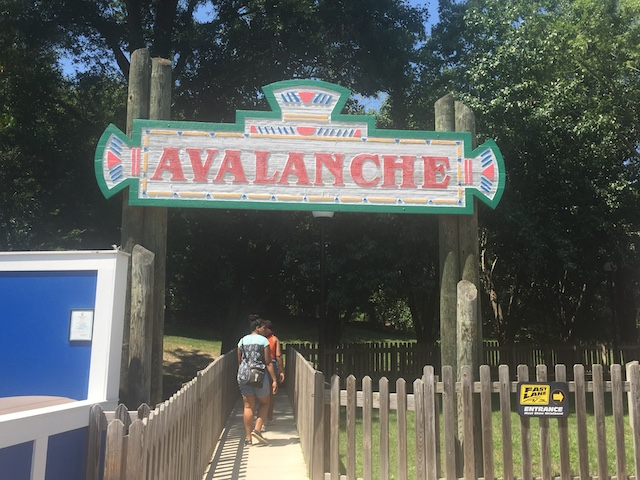

| |
Reptilian Review
Today at Kings Dominion, we're here to review Reptilian, the park's Bobsled coaster. Sadly, Bobsled coasters are starting to become a dying breed. I mean, this is the only Mack Bobsled in the United States. All the others are in Europe. And there's only 4 others in the world. So it's not like they're swimming in Mack Bobsleds over there. Which is a shame, since these really are fun rides. We get in the cars, pull down the lap bar, and we're off. We go around a turn and head up the lifthill, getting a nice view of the Flight of Fear Building, and looking from old POVs, you would get a great Volcano view. ='( Still sad that they tore out Volcano right before I made it to Kings Dominion. Hopefully something good goes in that spot. We reach the top, and head into a downward helix. We begin to gain some speed and even...swing a little bit as we curve on down. Hey, I'm enjoying this. I always enjoy slithering through these sort of helixes. We then head up this small hill that really seems to take away a lot of our speed and just in case we had any leftover, the midcourse brakes will suck you dry. *Sigh* Ugh. I forgot about this element of Bobsled Coasters. We head into a downward helix and begin to regain our speed until we head into this S Curve, going through a left turn only to then go the opposite direction. This is particuarly fun as it allows us to get some swinging action on those turns. And I like that. We then head into another downward helix where we gain some more speed. And the fact that this is a bobsled coaster really makes this more exciting and fun. Cause this allows you to get some swinging action when going through those twists and helixes. And....damn it! It's just a ton of fun. We then head up into an upward helix, having fun. And unfortunately, we glide right into the brake run. Aww. Just when it was getting good. Reptilian really is a fun coaster. Sure, it's not amazing. But you have to judge it as a family coaster. And....it's a ton of fun by family coaster standards. It's not intense, but the helixes and the swinging is just a ton of fun. And....it's a really rare type of ride. So you'll be getting something special and unique while riding. Definately check it out when visiting Kings Dominion.
6/10
Location: Kings Dominion
Opened: 1988
Built by: Mack
Last Ridden: July 28, 2019
Reptilian Photos



Home
|